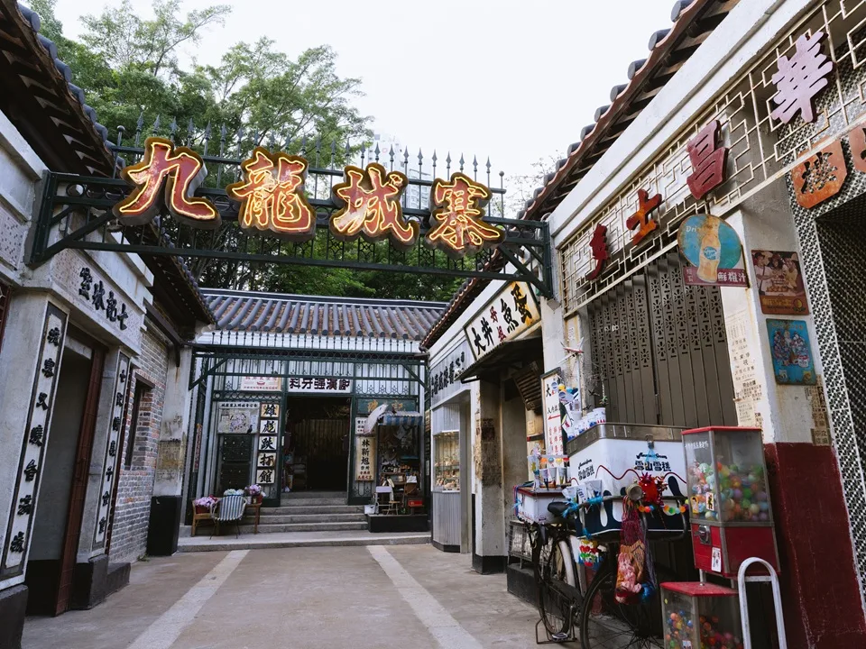
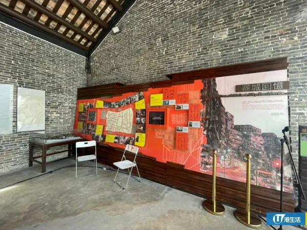
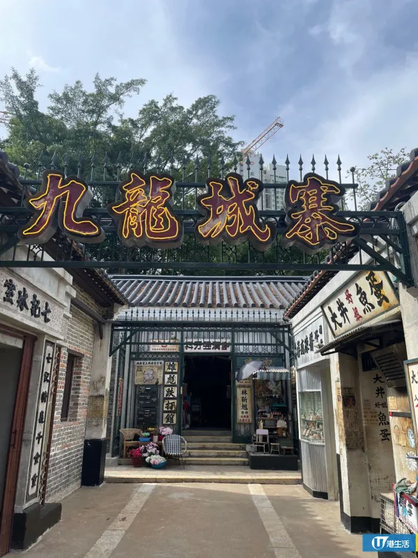
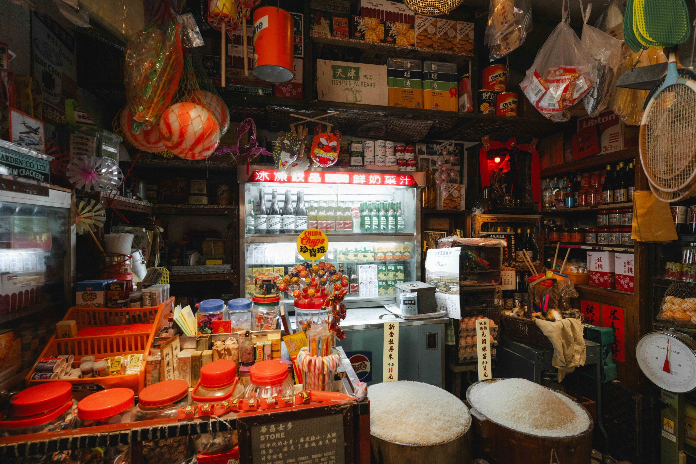
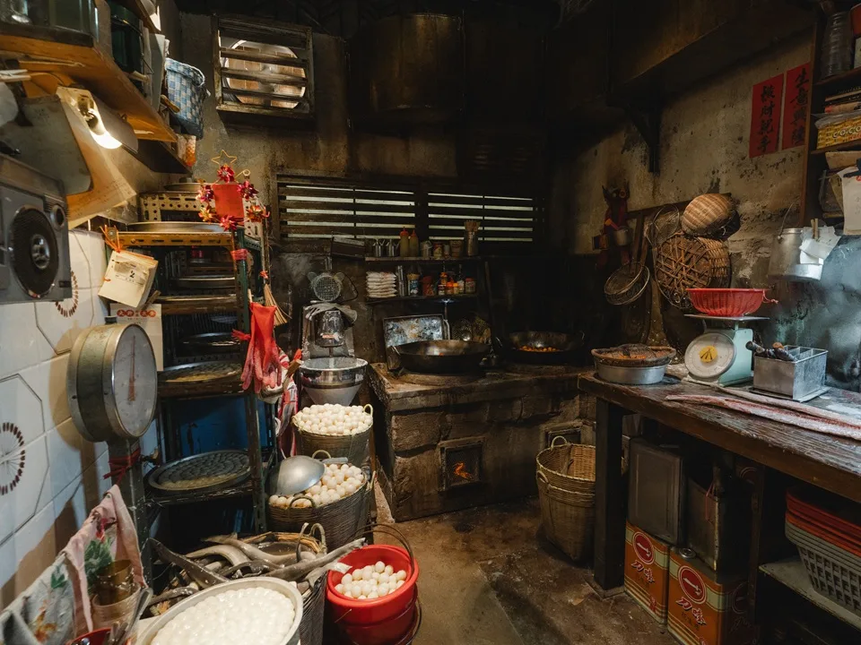
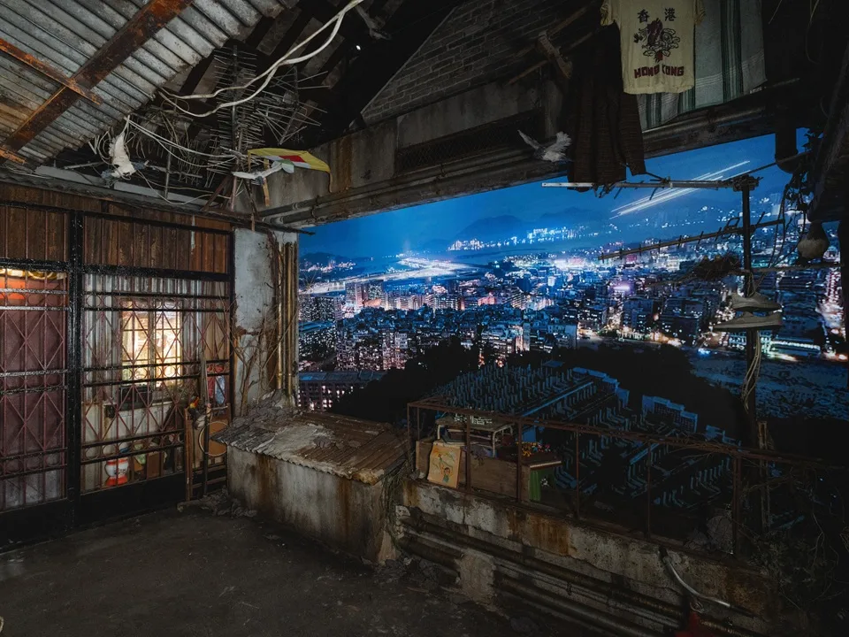
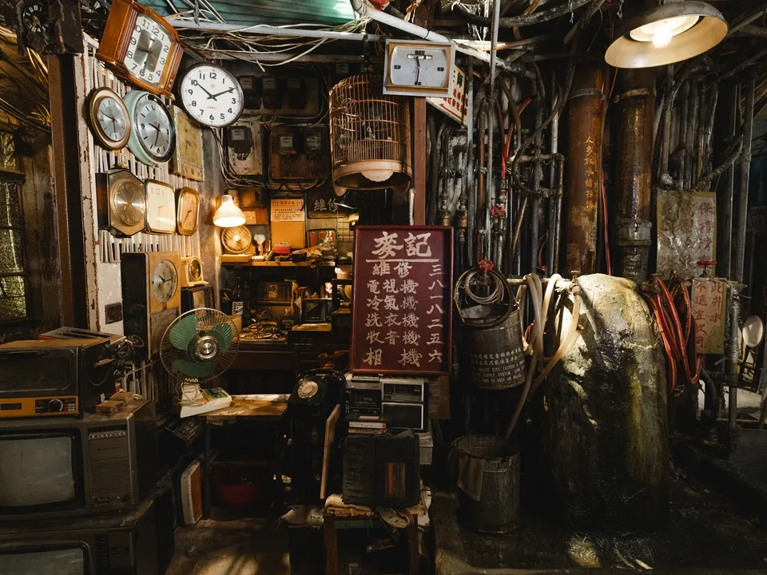
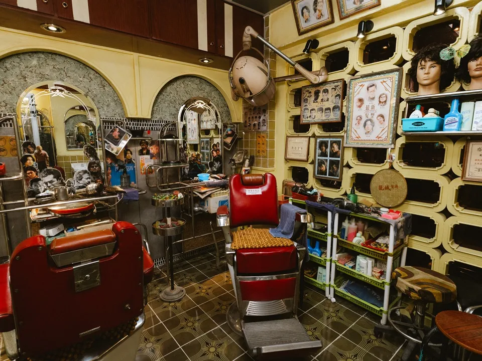
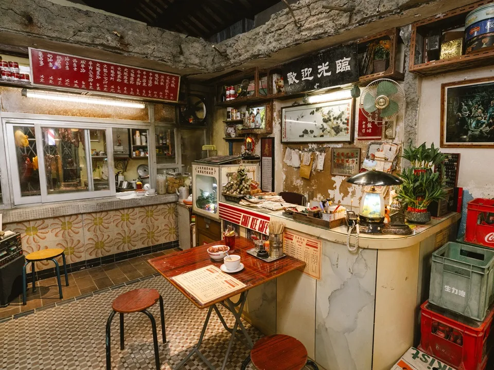

Kowloon: Beyond the myth:The Walled City of Kowloon
Introduction
About this WebsiteTravel Guide
Kowloon Walled City Park Kowloon Walled City Exhibition Nearby Food Spots(1) Nearby Food Spots(2) Kowloon City attractions Derivative Artworksothers
Contact Us
‘Kowloon Walled City: A Cinematic Journey’ Movie Set Exhibition
Overview
Kowloon Walled City: A Cinematic Journey, curated by the Cultural and Creative Industries Development Office and funded by the Film Development Fund, has officially opened in Hong Kong. The exhibition is themed on the Hong Kong Film Awards Best Film The Siege of Kowloon Walled City and reconstructs the film’s sets for a three-year run. It recreates the distinctive atmosphere of the 1980s Kowloon Walled City and expands the scale of the original sets to immerse visitors in that era.
Immersive Features and Design
The rooftop includes a large projection screen showing day-and-night views of the Walled City with added airplane sound effects. The glue-brewing factory features a scent installation so visitors can experience the smells of everyday life in the Kowloon area. Traditional Hong Kong craft elements are incorporated throughout, including a large hand-painted traditional floral board at the entrance and an iron arch inspired by 1980s building roller-shutter designs. Some floor tiles were reclaimed from old buildings to echo period design features.
Film Awards and Box Office
The Siege of Kowloon Walled City was released on 1 May 2024 in Hong Kong, Macau, and Mainland China. After 62 days in release it surpassed HK$100 million at the Hong Kong box office. The film opened in Japan on 17 January 2025, and by 12 April 2025 had exceeded ¥400 million (approximately HK$20.8 million) in Japan. At the 43rd Hong Kong Film Awards, the film won nine awards, including Best Film, Best Director, Best Cinematography, Best Editing, Best Art Direction, Best Costume and Makeup Design, Best Action Choreography, Best Sound Design, and Best Visual Effects.
Ten Iconic Film Scenes

The exhibition recreates 10 classic film scenes from The Siege of Kowloon Walled City, including Chat Kee Café, Lung Sing Hair Salon, Dental Clinic, Corner Store, Bone-Setting Clinic, Fish Ball Factory, Tailor Shop, Repair Shop, Water Well, Glue Brewery, and the Walled City Light and Shadow Rooftop.
Hall 1: Entrance Floral Board / Walled City Residents Association


Hall 2: Corner Store / Bone-Setting Clinic

Hall 3: Fish Ball Factory

Hall 4: Dental Clinic

Hall 5: Walled City Light and Shadow Rooftop

Hall 6: Narrow Alley Interior Street

Hall 7: Lung Sing Hair Salon

Hall 8: Chat Kee Café

Exhibition Details
| Address | Junction of Tung Tau Tsuen Road and Tung Ching Road, Kowloon City |
| Park opening hours | May–August 2025: 9:00 AM–7:00 PM From September 2025: 9:00 AM–6:00 PM |
| Admission fees | Free |
| How to get there | About a 14‑minute walk from MTR Sung Wong Toi Station Exit B3 |
Admission Arrangements
| Distribution times | 08:45 — tokens for entry until 14:00; 13:45 — tokens for entry 14:00–19:00. |
| Session length | About 15 minutes per visit. |
| Capacity | 60 people per session. |
| Limit | Up to 2 tokens per person. |
Related content